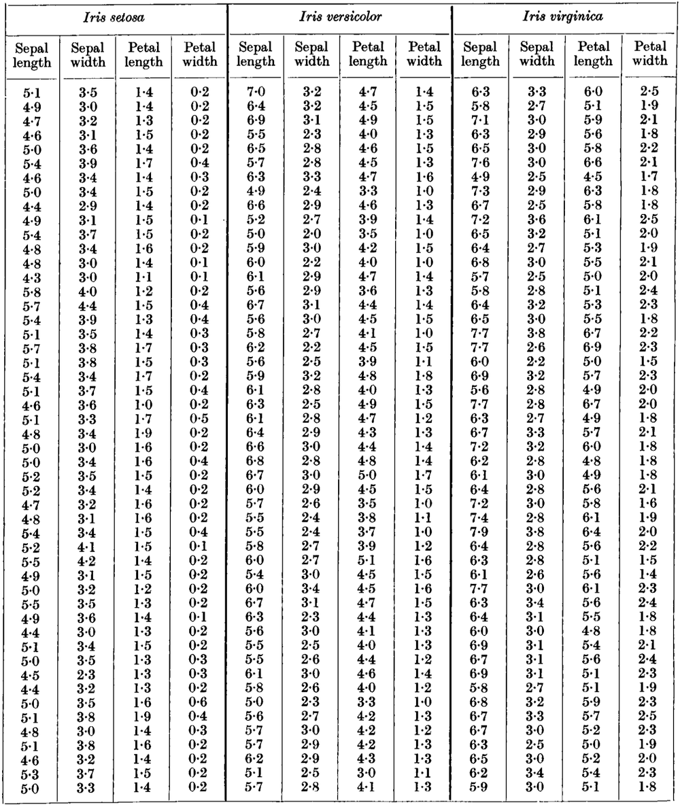

12 Quantities and data types
\(\DeclarePairedDelimiter{\set}{\{}{\}}\)
Motivation for the “Data I” part
In the “Inference I” part we surveyed the four fundamental rules of inference, which determine how an agent’s degrees of belief should propagate and be self-consistent. We explored some applications and consequences of the four fundamental rules. The rules can be used with any sentences whatsoever, so their application can be further developed and specialized in a wide spectrum of directions, with applications ranging from robotics to psychology. Each of these possible developments would require by itself a full university course!
We shall now restrict our attention to applications typical of “data science” and machine learning, like classification, forecast, prognosis, hypothesis testing, in situations that involve quantifiable and measurable phenomena. For this purpose we focus on sentences of particular kinds, which can express such quantification and measurement. In a sense, we develop a specialized “language” for this kind of situations.
Still, since we’re nonetheless dealing with sentences (Ch. 6), the probability calculus and its inference rules apply without changes of any kind.
12.1 Quantities
Quantities, values, domains
Most decisions and inferences in engineering and data science involve things or properties of things that we can measure. We represent them by mathematical objects of different kinds. These objects have particular mathematical properties and can undergo particular operations.
The different mathematical properties of these things reflect the kind of activities that we can do with them. For instance, colours are represented by particular tuples of numbers. These tuples can be multiplied by some numeric weights and added, to obtain another tuple. This mathematical operation, called “convex combination”, represents the fact that colours can be obtained by mixing other colours in different proportions.
25% #FF0000 + 75% #0000FF = #4000C0
It’s difficult to find a general term to denote any instance of such “things” and their mathematical representation. Yet it’s convenient if we find one, so we can discuss the general theory without getting bogged down in individual cases. To this purpose we’ll borrow the term quantity from physics and engineering.
We distinguish between a quantity and its value. For instance, a quantity could be:
“The temperature at the point having GPS coordinates 60.3775029, 5.3869233, 643, at time 1895-10-04T10:03:14Z”;
and its value could be:
\(24\,\mathrm{°C}\). To understand the difference between a quantity and its value, you may think of the quantity as a question, and of the value as the answer to that question:
(quantity:) “What was the temperature at the point having GPS coordinates 60.3775029, 5.3869233, 643, at time 1895-10-04T10:03:14Z?”
(value:) “It was \(24\,\mathrm{°C}\).”
The distinction between a quantity and its value is important and necessary in inference and decision problems, because an agent may not know the value of a particular quantity, while still knowing what the quantity is. In this case the agent can consider every possible value that the quantity could have, and assign a probability to each. The set of possible values is called the domain of the quantity. Think of it as the collection of all meaningful answers that could be given to the question. In our temperature example, the domain is the set of all possible temperatures from \(0\,\mathrm{K}\) and above.
Keep in mind that our definition of quantity is quite general. Here’s another example:
Quantity: the image taken by a particular camera at a particular time, represented by a specific collection of numbers (say 128 × 128 × 3 integers between \(0\) and \(255\)).
One example value is this:
 (corresponding to a grid of 128 × 128 × 3 specific numbers). Another example value:
(corresponding to a grid of 128 × 128 × 3 specific numbers). Another example value:  .
.Domain: the collection of \(256^{3\times128\times128} \approx 10^{118 370}\) possible images (corresponding to the collection of possible grids of numeric values).
Other examples of quantities and their domains:
The distance between two objects in the Solar System at a specific Barycentric Coordinate Time. The domain could be, say, all values from \(0\,\mathrm{m}\) to \(6\cdot10^{12}\,\mathrm{m}\) (Pluto’s average orbital distance).
The number of total views of a specific online video (at a specific time), with a domain, say, from 0 to 20 billions.
The force on an object at a specific time and place. The domain could be, say, 3D vectors with components in \([-100\,\mathrm{N},\,+100\,\mathrm{N}]\).
The degree of satisfaction in a customer survey, with five possible values
Not at all satisfied,Slightly satisfied,Moderately satisfied,Very satisfied,Extremely satisfied.The graph representing a particular social network. Individuals are represented by nodes, and different kinds of relationships by directed or undirected links between nodes, possibly with numbers indicating their strength. The domain consists of all possible graphs with, say, 0 to 10 000 nodes and all possible combinations of links and weights between the nodes.
The relationship between the input voltage and output current of an electric component. The domain could be all possible continuous curves from \([0\,\mathrm{V}, 10\,\mathrm{V}]\) to \([0\,\mathrm{A}, 1\,\mathrm{A}]\). Note that the domain in this case is not made of numbers.
A 1-minute audio track recorded by a device with a sampling frequency of 48 kHz (that is, 48 000 audio samples per second). The domain could be all possible sequences of 2 880 000 numbers in \([0,1]\).
The subject of an image, with domain of three possible values
cat,dog,something else.The roll, pitch, yaw of a rocket at a specific time and place, with domain \((-180°,+180°]\times(-90°,+90°]\times(-180°,+180°]\).
The vague term “data” typically means the values of a collection of quantities.
In these notes we agree that a quantity has one, and only one, actual value.
Notation
We shall denote quantities by italic letters, such as \(X\), or \(U\), or \(A\). The sentences that appear in decision-making and inferences are therefore often of the kind:
“the quantity \(X\) was observed to have value \(x\)”,
where “\(x\)” stands for a specific value. This kind of sentences are often abbreviated in the form “\(X\mathclose{}\mathord{\nonscript\mkern 0mu\textrm{\small=}\nonscript\mkern 0mu}\mathopen{}x\)”.
12.2 Basic types of quantities
As the examples above show, quantities and data come in all sorts, and with various degrees of complexity. There is no clear-cut divide between different sorts of quantities. The same quantity can moreover be viewed and represented in many different ways, depending on the specific context, problem, purpose, and background information.
It is possible, however, to roughly differentiate between a handful of basic types of quantities, from which more complex types are built. Here is one kind of differentiation that is useful for inference problems about quantities:
Nominal
A nominal or categorical quantity has a domain with a discrete and usually finite number of values. The values are not related by any mathematical property, and do not have any specific order.
This means that when we speak of a nominal quantity, it does not make sense to say, for instance, that one value is “twice” or “1.5 times” another; or that one value is “larger” or “later” than another. Nor does it make sense to “add” two quantities. In particular, there is no notion of cumulative probability, quantile, median, average, or standard deviation for a nominal quantity; these are notions that we’ll discuss in Ch. 21.
Examples: the possible breeds of a dog, or the characters of a film.
It is of course possible to represent the values of a nominal quantity with numbers; say 1 for Dachshund, 2 for Labrador, 3 for Dalmatian, and so on. But that doesn’t mean that
Dalmatian\({}-{}\)Labrador\({}={}\)Labrador\({}-{}\)Dachshund
just because \(3-2=2-1\), or similar nonsense.
Ordinal
An ordinal quantity has a domain with a discrete and usually finite number of values. The values are not related by any mathematical property, but they do have a specific order.
This means that that when we speak of a nominal quantity, it does not make sense to say that one value is “twice” or “1.5 times” another, and we cannot add or subtract two values. But it does make sense to say, for any two values, which one has higher rank, for example “stronger”, or “later”, or “larger”, and similar. Owing to the ordering property, it does make sense to speak of cumulative probability, quantile, and median of an ordinal quantity; but there is no notion of average or standard deviation for an ordinal quantity.
Example: a pain-intensity scale. A patient can say whether some pain is more severe than another, but it isn’t clear what a pain “twice as severe” as another would mean (although there’s a lot of research on more precise quantification of pain). Another example: the “strength of friendship” in a social network. We can say that we have a “stronger friendship” with a person than with another; but it doesn’t make sense to say that we are “four times stronger friends” with a person than with another.
It is possible to represent the values of an ordinal quantity with numbers which reflect the order of the values. But it’s important to keep in mind that differences or averages of such numbers do not make sense. For this reason the use of numbers to represent an ordinal quantity can be misleading. A less misleading possibility is to represent ordered values by alphabet letters.
Binary
A binary or dichotomous quantity has only two possible values. It can be seen as a special case of a nominal or ordinal quantity, but the fact of having only two values lends it some special properties in inference problems. This is why we list it separately.
Obviously it doesn’t make much sense to speak of the difference or average of the two values; and their ranking is trivial even if it makes sense.
There’s an abundance of examples of binary quantities: yes/no answers, presence/absence of something, and so on.
Interval
An interval quantity has a domain that can be discrete or continuous, finite or infinite. The values do admit some mathematical operations, at least convex combination and subtraction. They also admit an ordering.
This means that for such a quantity we can say, at the very least, whether the interval or “distance” between one pair of values is the same, or larger, or smaller than the interval between another pair. For this reason we can also say whether one value is larger than another. We can also take weighted sums of values, called convex combinations (keep in mind that simple addition of values may be meaningless for some quantities).
Owing to these mathematical properties, it does make sense to speak of the cumulative probability, quantile, median, and also average and standard deviation for an interval quantity.
The number of electronic components produced in a year by an assembly line is an example of a discrete interval quantity. The power output of a nuclear plant at a given time is an example of a continuous interval quantity.
It is also possible to speak of ratio quantities, which are a special case of interval quantities, but we won’t have use of this distinction in the present notes.
How to decide the basic type of a quantity?
To attribute a basic type to a quantity we must ultimately check how that quantity is defined, obtained, and used. In some cases the values of the quantity may give some clue. For example, if we see values “\(2.74\)”, “\(8.23\)”, “\(3.01\)”, then the quantity is probably of the interval type. But if we see values “\(1\)”, “\(2\)”, “\(3\)”, then it’s unclear whether the quantity is interval, ordinal, nominal, or maybe of yet some other type.
The type of a quantity also depends on its use in the specific problem. A quantity of a more complex type can be treated as a simpler type if needed. For instance, the response time of some device is in principle an interval quantity: it could be measured, say, in seconds, as precisely as we want. But in a specific situation we could simply label its values as slow, medium, fast, thus turning it into an ordinal quantity.
@@ TODO: add examples for image spaces
12.3 Other attributes of basic types
It is useful to consider other basic aspects of quantities that are somewhat transversal to “type”. These aspects are also important when drawing inferences.
Discrete vs continuous
Nominal and ordinal quantities have discrete domains. The domain of an interval quantity can be discrete or continuous. Ultimately all domains are discrete, since we cannot observe, measure, report, or store values with infinite precision. In a modern computer, for example, a real number can “only” take on \(2^{64} \approx 20 000 000 000 000 000 000\) possible values. But in practice, in many situations the available precision is so high that we can consider the quantity as continuous for all practical purposes. This can be convenient also because we can then use the mathematics of continuous sets – derivation, integration, and so on – to our advantage.
Bounded vs unbounded
Ordinal and interval quantities may have domains with no minimum value, or no maximum value, or neither. Typical terms for these situations are lower- or upper-bounded, or left- or right-bounded, and analogously with unbounded; or similar terms.
Whether to treat a quantity domain as bounded or unbounded depends on the quantity, the specific problem, and the computational resources. For example, the number of times a link on a webpage has been clicked can in principle be (upper-)unbounded. Another example is the distance between two objects: we can consider it unbounded, but in concrete problems might be bounded, say, by the size of a laboratory, or by Earth’s circumference, or the Solar System’s extension, and so on.
Finite vs infinite
The domain of a discrete quantity can consist of a finite or an infinite number (at least in theory) of possible values. The domain of a continuous quantity always has an infinite number of values. Note that a domain can be infinite and yet bounded: consider the numbers in the range \([0,1]\).
Whether to treat a domain as finite or infinite depends on the quantity, the specific problem, and the computational resources. For example, the intensity of a base colour in a pixel of a particular image might really take on 256 discrete steps between \(0\) and \(1\): \(0, 0.0039215686, 0.0078431373, \dotsc, 1\). But in some situations we can treat this domain as practically infinite, with any possible value between \(0\) and \(1\).
Rounded
A continuous interval quantity may be rounded, because of the way it’s measured. In this case the quantity could be considered discrete rather than continuous.
 The Iris dataset from its original paper
For instance, the famous Iris dataset consists of several lengths – continuous interval quantities – of parts of flowers. All values are rounded to the millimetre, even if in reality the lengths could of course have intermediate values. The age of a person is another frequent example of an in-principle continuous quantity which is often rounded, say to the year or to the month.
Rounding can impact the way we do inferences about such a quantity. In some situations, rounding can lead to quantities with different unrounded values to take on identical rounded ones.
Censored
The measurement procedure of a quantity may have an artificial lower or upper bound. A clinical thermometer, for instance, could have a maximum reading of \(45\,\mathrm{°C}\). If we measure with it the temperature of a \(50\,\mathrm{°C}\)-hot body, we’ll read “\(45\,\mathrm{°C}\)”, not the real temperature.
A quantity with this characteristic is called censored, more specifically left-censored or right-censored when there’s only one artificial bound. The bound is called the censoring value.
A censoring value denotes an actual value that could also be greater or less. This is important when we draw inferences about this kind of quantities.
12.4 “True” vs “measured” values
A difference is often drawn, especially in physics and engineering, between the “true” value of a quantity and the value “observed” or “measured” with a particular measuring instrument. What’s the difference? and how is the “true” value defined? There actually are deep philosophical questions and choices underlying this distinction, and it would take a whole university course to do them justice.
Intuitively we define the “true” value as the value that would be measured with an instrument that is perfectly calibrated and as precise as theoretically possible. If we make a distinction between such value and the currently measured value then we’re implying that the current measurement is made with a less precise instrument, and that the “true” and “measured” values could be different.
In some circumstances this distinction is unimportant and an agent can use the “measured” value without worries, and consider it as the “true” one. Typically this is the case when the possible discrepancy between measured and true value is enough small to have no consequences. In other circumstances the discrepancy is important: slightly different values might lead to quite different consequences. In such circumstances it is then necessary for the agent to try to infer – using the probability calculus – the true value, using the measured one as “data” or “evidence”. Said otherwise, the agent doesn’t use the measured value directly, but only as an intermediate step to guess the true value. The latter, in turn, can be used for further inferences.
From the point of view of inference and decision-making, the distinction between “true” and “measured” value doesn’t lead to anything methodologically new. It just means that an agent has to do a chain of inferences instead of just one, using the four rules of inference as usual. This situation often requires the definition of two distinct quantities, the “true” and the “observed”, which can have slightly different domains. For instance, we could have a voltage \(V_\text{obs}\) measured with rounding to \(1\,\mathrm{V}\) and therefore with discrete domain \(\set{10\,\mathrm{V}, 11\,\mathrm{V}, 12\,\mathrm{V}, \dotsc}\); but we need the “true” voltage \(V_\text{true}\) with a precision of at least \(0.01\,\mathrm{V}\), so this latter quantity could have a continuous domain.
In solving data-science and engineering problems it’s important to make clear whether a particular quantity value can be considered “true” and used as-is, or only “observed” with insufficient precision and used as data to infer the true value.
12.5 Importance of metadata for inference and decision
The characteristics of quantities and domains that we have discussed so far are examples of metadata. As the name implies, metadata is information that typically cannot be found in the data.
As a simple example, consider this collection of numerical data values:
8 2 6 19 1 5 4 19 1 8 12 3 1 2 17
and suppose that some machine-learning algorithm has to generate a new number “similar” to the ones above, or guess what a new one could be. Consider the following possible guesses; would they be acceptable?:
- 13. Note that this number does not appear among the values above. Could it be that it is impossible for some particular reason? For example, this value is omitted from the seat numbers of some airlines or street addresses, because of triskaidekaphobia.
21. This guess would be impossible if the reported values are rolls of a 20-sided die, typical of fantasy roleplay games. But if the values are, say, the ages of some people, then 21 could be an admissible guess.
3.5. The reported values are all integers. But they could be rounded values of say, temperature readings or ages. We don’t know whether a more precise, non-rounded guess such as 3.5 could be acceptable.
-2. If the reported values are people’s ages or objects’ weights, then a negative value would be impossible. But if the values were temperatures in degrees Celsius, then the guess -2 could be acceptable.
The collection of values does not allow us to determine which of the possible scenarios above applies.
A simple piece of metadata can actually correspond to an infinite amount of datapoints. Even if we have a collection of one million positive numbers, they still don’t tell us whether negative values are impossible or not. When we are given the information that the domain of the relevant quantity is positive, this effectively corresponds to knowing that all future data – possibly an infinity – will not be negative.
An AI agent or machine-learning algorithm will therefore make better guesses and better decisions if it is given full metadata, besides “training” data. For this reason metadata are extremely important for inference and decision-making, and an optimal agent should make use of metadata.